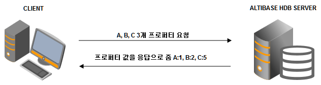
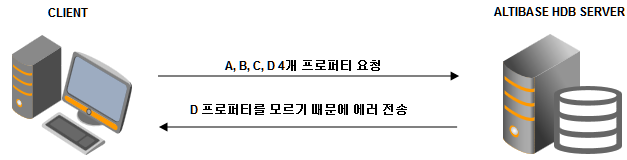

현상
ALTIBASE HDB 클라이언트에서 알티베이스 서버로 접속이 실패합니다.
아래 두 가지 경우에 해당될 때 에러가 발생할 수 있습니다. 버전에서 앞 세자리가 메이저 버전, 뒷 자리가 패치 버전입니다.
- 서버와 클라이언트의 메이저 버전이 동일하나 클라이언트의 패치 버전이 서버 보다 높을 때.
- 클라이언트의 메이저 버전이 서버의 메이저 버전보다 높을 때.
# 클라이언트 버전
$ apre -v
Altibase Precompiler2(APRE) Ver.1 6.1.1.1.10 XEON_LINUX_redhat_Enterprise_ES4-64bit-6.1.1.1.10-release-GCC3.4.6 (xeon-redhat-linux-gnu) Mar 4 2013 09:43:18
# 알티베이스 서버 버전
$ altibase -v
version 6.1.1.0.0 XEON_LINUX_redhat_Enterprise_ES4-64bit-6.1.1.0.0-release-GCC3.4.6 (xeon-redhat-linux-gnu) Apr 18 2012 18:20:15, binary db version 6.1.1, meta version 5.9.1, cm protocol version 5.6.2, replication protocol version 6.1.1
# 메이저 버전이 6.1.1 이고 패치 버전이 1.10 인 클라이언트에서 6.1.1.0.0 서버로 접속 시
$ isql -u sys -p manager -s 127.0.0.1 -port 26110
-----------------------------------------------------------------
Altibase Client Query utility.
Release Version 6.1.1.1.10
Copyright 2000, ALTIBASE Corporation or its subsidiaries.
All Rights Reserved.
-----------------------------------------------------------------
ISQL_CONNECTION = TCP, SERVER = 127.0.0.1, PORT_NO = 26110
[ERR-4109C : Invalid session property]
# 클라이언트 버전
$ apre -v
Altibase Precompiler2(APRE) Ver.1 6.1.1.3.2 XEON_LINUX_redhat_Enterprise_ES4-64bit-6.1.1.3.2-release-GCC3.4.6 (xeon-redhat-linux-gnu) Aug 28 2013 17:54:46
# 알티베이스 서버 버전
$ altibase -v
version 5.5.1.4.10 XEON_LINUX_redhat_Enterprise_ES4-64bit-5.5.1.4.10-release-GCC3.4.6 (xeon-redhat-linux-gnu) Aug 14 2013 18:09:27, binary db version 5.4.1, meta version 5.9.1, cm protocol version 5.6.3, replication protocol version 5.6.1
# 클라이언트 버전 6.1.1.3.2 에서 알티베이스 서버 5.5.1.4.10 로 접속 시
$ isql -u sys -p manager -s 127.0.0.1 -port 25514
-----------------------------------------------------------------
Altibase Client Query utility.
Release Version 6.1.1.3.2
Copyright 2000, ALTIBASE Corporation or its subsidiaries.
All Rights Reserved.
-----------------------------------------------------------------
ISQL_CONNECTION = TCP, SERVER = 127.0.0.1, PORT_NO = 25514
[ERR-4109C : Invalid session property]
동일 메이저 버전 내에서 발생하는 경우
ALTIBASE HDB 5.5.1
JDBC 클라이언트
ALTIBASE JDBC DRIVER 버전 5.5.1.3.7 을 포함한 상위 버전에서 5.5.1.3.7 보다 낮은 버전의 서버로 접속 시 연결이 실패합니다. (예, JDBC 드라이버 버전 5.5.1.3.7 -> ALTIBASE HDB 서버 5.5.1.3.6)
CLI 클라이언트
5.5.1.4.6 을 포함한 상위 버전 클라이언트에서 5.5.1.4.6 보다 낮은 버전의 서버로 접속 시 연결이 실패합니다. (예, iSQL 버전 5.5.1.4.6 -> ALTIBASE HDB 서버 5.5.1.4.4)
ALTIBASE HDB 6.1.1
JDBC 클라이언트
ALTIBASE JDBC DRIVER 버전 6.1.1.0.9 을 포함한 상위 버전에서 6.1.1.0.9 보다 낮은 버전의 서버로 접속 시 연결이 실패합니다. (예, JDBC 드라이버 버전 6.1.1.0.9 -> ALTIBASE HDB 서버 6.1.1.0.8)
CLI 클라이언트
6.1.1.1.10 을 포함한 상위 버전 클라이언트에서 6.1.1.1.10 보다 낮은 버전의 서버로 접속 시 연결이 실패합니다. (예, iSQL 버전 6.1.1.1.10 -> ALTIBASE HDB 서버 6.1.1.1.9)
원인
클라이언트가 서버로 접속 시 서버가 모르는 서버 프로퍼티를 요청하여 발생하는 에러입니다.
클라이언트는 접속 시점에 클라이언트 설정에 필요한 서버 프로퍼티를 ALTIBASE HDB 서버로 요청합니다.

그런데 상위 버전에서 서버 프로퍼티가 추가되고 상위 버전의 클라이언트가 하위 버전으로 접속하게 되면 아래와 같은 상황으로 에러가 납니다.

조치
- ALTIBASE HDB 서버와 동일한 버전이나 낮은 버전의 클라이언트를 사용합니다.
- 상위 버전의 클라이언트를 사용해야 할 경우 ALTIBASE HDB 서버 버전도 동일한 버전으로 패치 또는 업그레이드 합니다.
참고
ALTIBASE HDB 서버 버전 확인 방법(Unix/Linux/Windows 모두 동일)
쉘 프롬프트 또는 도스 창에서 아래 명령어 수행.
$ altibase -v
ALTIBASE HDB 서버에 접속하여 아래 쿼리로 조회.
iSQL> SELECT PRODUCT_VERSION FROM V$VERSION;
알티베이스 클라이언트 버전 확인 방법
알티베이스 클라이언트 패키지를 설치했을 경우 (Unix/Linux/Windows 모두 동일)
$ apre -v
ODBC 드라이버의 경우
윈도우 탐색기에서 altiodbc.dll 파일의 속성에서 확인.

JDBC 드라이버의 경우
$ java -jar Altibase.jar
{kind=link}
{kind=link}
{kind=link}